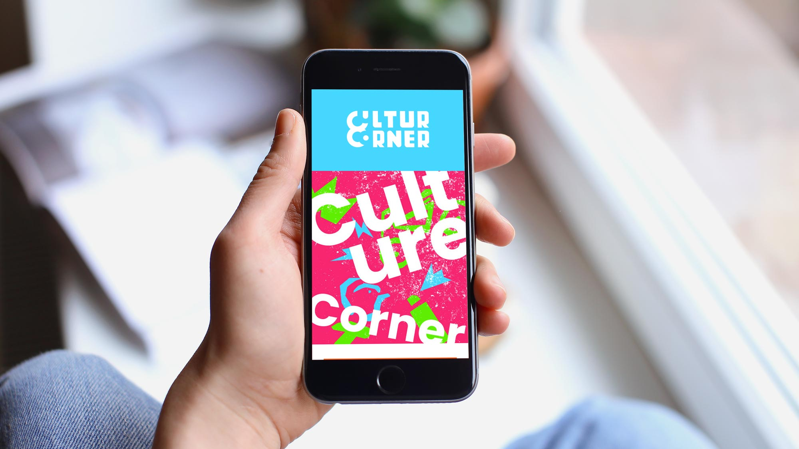
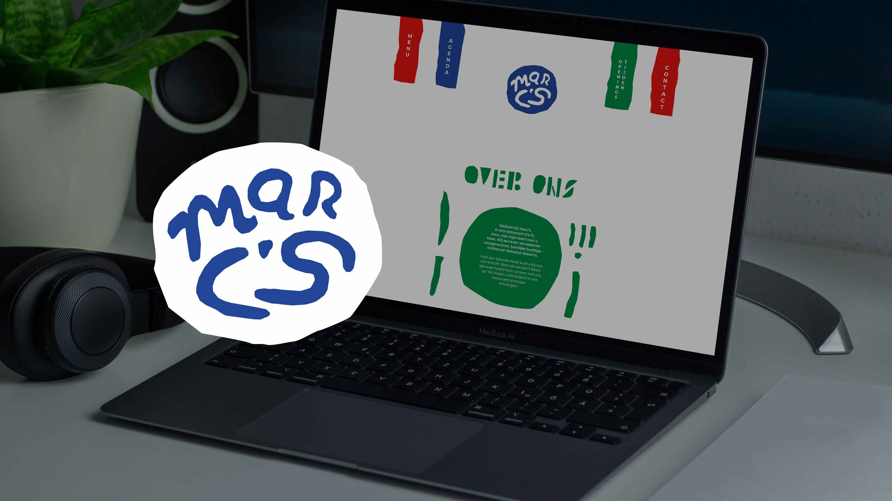
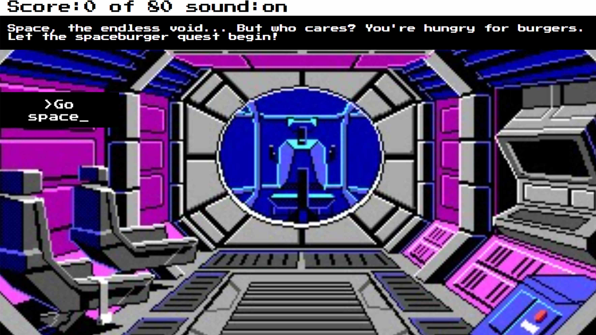

Portfolio
Neem een kijkje naar mijn werk. Dit zijn een paar projecten van mijn eerste CMD schooljaar.

Heel Holland Kookt
Dit was een team project waarbij wij een app moesten ontwikkelen dat met simpele stappen een kookproces uitlegt. Dat moest in drie prototypes, en bij het maken van de eerste twee versies moesten wij dit gaan testen en interviewen met de doelgroep. Het interviewen vond ik nog een beetje spannend, maar bij de tweede keer viel het al mee. Samenwerking ging wat minder. Ik deed dus iets meer dan de rest, maar daar heb ik van geleerd om daar zo snel mogelijk te bespreken met mijn team en desnoods de opdrachtgever.
Bekijk project

Cultur Corner
Bij dit project was ik bezig met het designen en bouwen van een website. De functie daarvan was het laten zien van de Nederlandse cultuur aan internationale studenten. Hier heb ik geleerd om mijn vormgevingsideeën te realiseren in HTML en CSS. De bedoeling was om dit op iphone 6/7/8 formaat te maken, dus als je deze website wilt bekijken, zet dan even de developer tools aan en zet deze dan op dit formaat. Feedback per iteratie was hard, maar ik heb er uiteindelijk wat moois van gemaakt.
Bekijk project

Restaurant Marc's
Dit was een leuke vormgevingsopdracht. Dat was heel leuk om weer te doen want ik had al een tijdje niet meer traditioneel vormgegeven sinds mijn MBO grafisch vormgeving examen. De bedoeling van deze opdracht was het maken van een restaurant website geïnspireerd van een voor jouw uitgekozen vormgever. Ik had Jan Bons, hij maakte veel werk met papier en andere traditionele methoden. Met mijn design had ik dat ook zo geëxperimenteerd. Het was heel interessant om op een andere manier vorm te geven.
Bekijk project

Burger Quest
Burger Quest was mijn Javascript eindopdracht. Ik vond CSS erg moeilijk, maar na alle opdrachtjes, de boeken in te gaan en veel te experimenteren kreeg ik uiteindelijk het Aha!-moment. Dit is dus een interactieve website waarmee je met text knoppen opties kan kiezen voor verschillende uitkomsten. Dit is gebaseerd op oldschool text based adventure pc games. Met deze site heb ik dus geoefend met if els statements, sfx, tekst veranderingen en meer. Javascript vindt ik nog steeds moeilijk, maar dit is een mooi begin.
Bekijk project